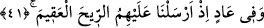

diye bağırır.
Aklı giden insanlar (mecnûnlar), akıllarının gitmesi sebebiyle ölülerden, huy ve
karakteri sebebiyle de dirilerden sayılır. Aslında mecnun ve meczûblar,
saîd/mü’minlerdendirler. Pek çok meczûba mükâşefât ve müşâhedât hâkimdir. Yâni
onlar umûr-i ğaybiyeyi ve ahvâl-i melekûtiyeyi müşâhede etmenin yanı sıra herhangi bir
mücâhede yapmamış olmalarına rağmen, insanların göremediği pek çok şeyi görürler.
İşte bu yüzden onlar akıl dâiresinden çıkarlar. Çünkü daha önceden bir hazırlıkları
bulunmadan ânî bir inkişâfla karşılaştıkları için buna tahammül edemeyip kendilerinden
akılları gider, daha sonra da Allah Teâlâ murad etmedikçe tekrar akıl dâiresine
girmeleri güçleşir. Ancak makbûl olan, meczûbun aklı üzere olması; bu cezbe hâlinin
kendisinin hâline gâlip gelmesi değil, kendisinin bu hâle dayanabilmesi ve ona hâkim
olmasıdır. Birincisi yâni meczûbun aklını koruyabilmesi, cezbede ileri aşamalarda
bulunan kimselerin ahvâlidir. İkincisi ise yeni başlayanların hâlet-i ruhiyesidir. Allah
yaptığı işin galibidir.
41. Âd kavminde de (ibretler vardır). Onlara kasıp kavuran rüzgârı göndermiştik.
“Âd’da” yâni Hud (a.s.)’ın kavminde de ibret alınacak şeyler vardır. Veya onlarda da
bir ibret kıldık. “Biz onlara” önce canlarını ve peşi sıra da evlerinin, mallarının ve
hayvanlarının “köklerini kesen bir rüzgâr gönderdik.”
Kâmûs’ta ukm kelimesi, rahimde bulunan bir çukurluk olup çocuğun teşekkülüne engel
teşkil eden şey diye izah edilir. Âyette rüzgarın kısırlıkla vasfedilmesinin sebebi, onları
helâk edip köklerini kazıyacak olmasındandır. “Akîm” ise, mu’kim veya âkim anlamında
“kazıyan, yok eden” demektir. Burada istiâre-i tebeiye vardır. Şöyle ki: Onların helâk
edilip köklerinin kazınması kadınların çocuk doğuramama ve çocuktan kesilmesi sayılan
kısırlıklarına benzetilmiş, daha sonra da müşebbeh bih olan kısırlık müşebbehin yerine
konularak ondan “akîm rüzgârı” türetilmiş veya bu kısırlıkla akîm rüzgârı tavsif
olunmuştur. Zira akîm rüzgârının yağmur yağdırma veya ağaçları aşılama gibi bir
özelliği yoktur. Yâni akîm rüzgârının bir fayda içermemesi kadının kısırlığına teşbih
olunmuş, sonra da onun yerine kullanılmıştır.
“Akîm” kelimesi, lâzım bir fiilin ism-i fâili anlamındadır.
Bahru’l-ulûm’da müellif şöyle demiştir: Allah Teâlâ’nın bu rüzgâra akîm adını
vermesi, kâfirlerin helâk edilmeleri ve köklerinin kazınması maksadıyla karılarının
rahimlerinde kısırlık meydana gelmesine sebep olmasındandır.
Bu akîm rüzgârları, azab ve helâk rüzgârlarıdır. Hz. Ali (r.a.) bunlara “nekbâ”
rüzgârları adını vermiştir ki bunun mânâsı iki esas yön olan doğu-batı arasından veya
sabâ (doğu) rüzgârı ile şimâl (kuzey) rüzgârının arasından esen yeldir. İbn Abbas’dan